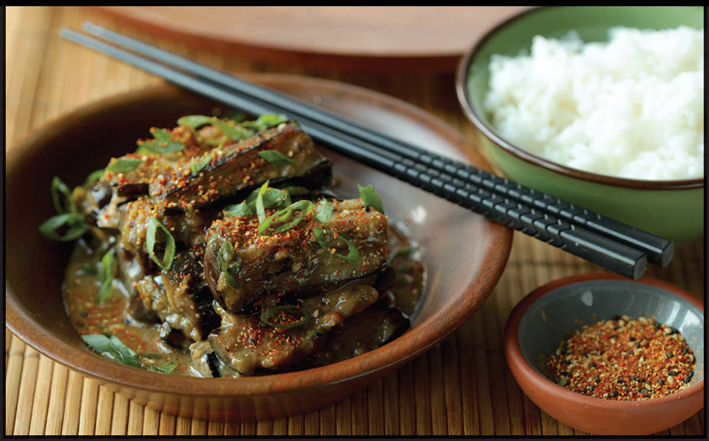

STIR-FRIED EGGPLANT WITH SAKE AND MISO
|
Yield Serves 4 |
Active Time 30 minutes Total Time 30 minutes |
INGREDIENTS
For the Eggplant:
Kosher salt
1 pound (450 g/3 to 4 medium) Chinese or Japanese eggplants, cut for stir-fries (see here)
For the Sauce:
1 tablespoon (about 115 g) white, yellow, or brown miso paste
1 tablespoon (15 ml) shoyu or tamari
3 tablespoons (45 ml) sake
2 teaspoons (8 g) sugar
For the Stir-Fry:
¼ cup (60 ml) peanut, rice bran, or other neutral oil
1 teaspoon (2.5 g) minced garlic (about 1 medium clove)
2 teaspoons (5 g) minced fresh ginger (about ½-inch segment)
2 scallions, thinly sliced on a bias, greens reserved separately for garnish
Pinch of shichimi togarashi or hot red pepper flakes (optional)

This classic Japanese dish starts with the same basic eggplant treatment as Fish-Fragrant Eggplant (here), but where that dish is a punch-you-in-the-mouth flavor fest, this one is much more subtle, instead relying on sake, miso, soy sauce, and sugar for a classic sweet-and-savory Japanese flavor profile. Serve the eggplant on top of a bowl of rice with some cucumber with Honey Mustard–Miso Dip (here) or cold spinach with Soy-Dashi (here) on the side, and you’ve got Japanese home-style comfort food at its best.
DIRECTIONS
1For the Eggplant: Combine ½ cup (120 g) kosher salt with 2 quarts (2 l) water in a medium bowl. Add the eggplant pieces, cover with a clean paper towel, press down to soak the paper towel in brine, and set aside to soak for at least 10 and up to 20 minutes. Drain the eggplant and spin in a salad spinner or blot dry with paper towels or a clean kitchen towel.
2While the Eggplant Soaks, Make the Sauce: Put the miso paste and shoyu in a small bowl and mix with a fork until homogenous, then add the sake and sugar and stir to combine.
3For the Stir-Fry: Heat a wok over high heat until lightly smoking. Add 3 tablespoons (45 ml) of the oil and swirl to coat. Reduce the heat to medium-high. Add the eggplant and stir-fry until the eggplant is starting to soften and is lightly browned, 3 to 4 minutes.
4Push the eggplant to the side of the wok and add the remaining tablespoon (15 ml) of oil to the center of the wok. Add the garlic, ginger, and scallion whites and cook until fragrant, about 15 seconds. Add the sauce mixture and stir-fry the entire contents of the wok until the eggplant is very tender and the sauce has reduced to a light coating on each piece, about 3 minutes longer. Transfer to a serving plate and sprinkle with scallion greens and shichimi togarashi (if using). Serve with steamed rice.